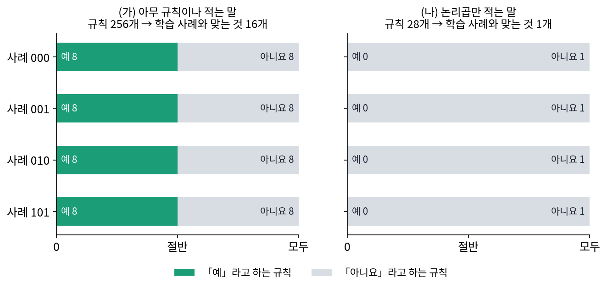
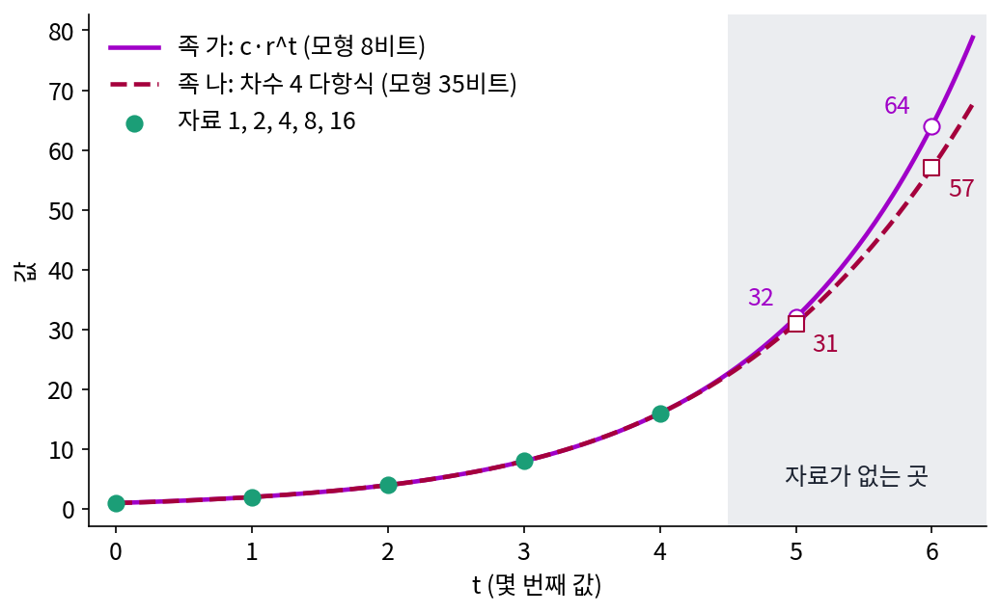
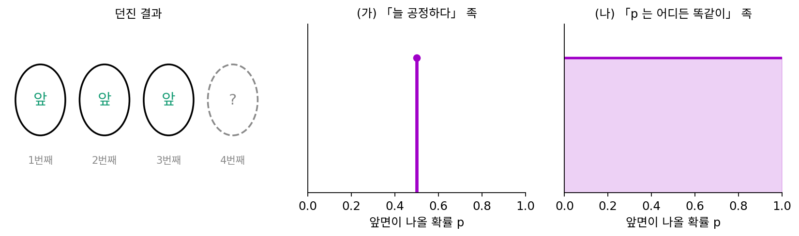
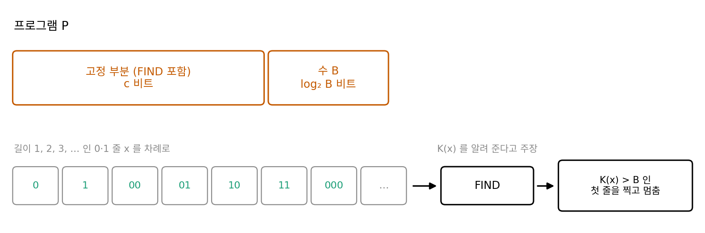
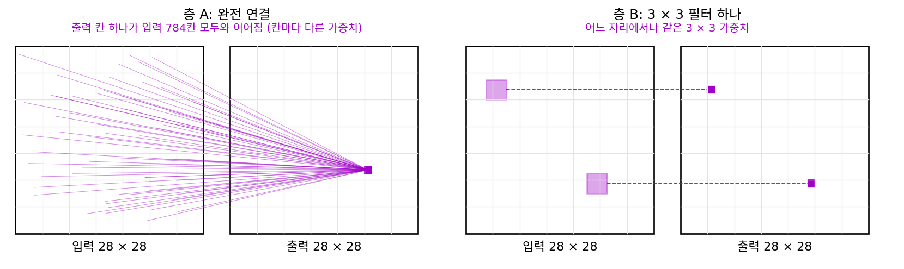

압축만으로 충분한가: 짧게 적기가 말해 주지 않는 것
이 장의 물음
이 책은 지금까지 「짧게 적을 수 있으면 규칙을 안 것이다」라는 생각을 따라왔다. 다음 글자를 잘 맞히는 예측기는 산술 코딩을 거쳐 그대로 압축기가 되었고, 모델을 적는 비트까지 세면 너무 복잡한 모델이 저절로 걸러졌다. 자료가 평평한 면 위에 있으면 주성분 몇 개로, 여러 조각 위에 있으면 희소한 계수 몇 개로 짧게 적었고, 노이즈를 걷어 내는 신경망은 자료를 낮은 차원 쪽으로 끌어당겼다.
그런데 길을 오면서 걸리는 숫자들을 몇 개 남겨 두었다. 머리말에서 원주율 π 의 천 자리는 190글자짜리 프로그램이면 되는데, zlib 은 503바이트로밖에 줄이지 못했다. 언어 모델 친칠라는 위키백과 1GB 를 원래 크기의 8.3% 로 줄였지만, 받는 쪽에 있어야 할 모델은 그 1GB 보다 훨씬 컸다. 학습 글을 전부 외운 예측기는 학습 글을 거의 0비트로 적지만 처음 보는 글에는 쓸모가 없었다.
ML 을 공부하는 사람도 비슷한 말을 자주 듣는다. 「손실이 낮은 모델이 더 똑똑하다」, 「모델을 키우면 손실이 거듭제곱으로 줄어든다」, 「언어 모델은 인터넷을 압축한 것이다」. 이 말들은 어디까지 맞을까?
- 가장 짧은 설명을 찾아 주는 기계가 있다면 학습은 끝난 문제일까? 없다면 무엇이 그 빈자리를 채울까?
- 모델의 크기까지 세면 큰 언어 모델은 정말 압축기일까? 「압축을 잘한다」는 말은 한 가지 뜻일까?
- 글을 잘 압축하는 모델이 시험 문제도 잘 풀까? 그 관계는 얼마나 단단할까?
- 관측한 자료를 아무리 짧게 적어도 답할 수 없는 물음이 있을까?
귀납 편향: 가장 짧은 설명은 찾을 수 없다
최소 기술 길이의 생각을 끝까지 밀면 이렇다. 자료를 내는 가장 짧은 프로그램의 길이, 곧 콜모고로프 복잡도 K(x) 를 알면 그 프로그램이 자료의 규칙이고, 그 프로그램을 계속 돌리면 다음 자료도 예측할 수 있다. 그렇다면 「가장 짧은 프로그램을 찾아 주는 프로그램」 하나만 만들면 학습은 끝난다. 그런 프로그램은 왜 아무도 쓰지 않을까? 그리고 실제로 우리가 쓰는 예측기들, 앞 글자 표나 다항식이나 신경망은 그 빈자리를 어떻게 메우고 있을까?
먼저 결론부터 받아 두자. 그런 프로그램은 만들 수 없다는 것이 증명되어 있다(왜 그런지는 아래 문제 2에서 직접 따져 본다). 그래서 실제 학습은 늘 미리 정한 모델 족 안에서만 짧은 설명을 찾는데, 머리말의 π 가 그 예였다. zlib 이 찾는 규칙은 「같은 글자 조각이 되풀이된다」, 「몇 가지 글자만 나온다」 같은 것뿐이라, π 천 자리를 503바이트까지만 줄였다. 190글자짜리 프로그램이 있다는 사실은 zlib 의 모델 족 밖에 있다.
역사: 일관성만으로는 고를 수 없다
1980년 러트거스 대학의 미첼(Tom Mitchell)은 짧은 기술 보고서 「일반화를 배우는 데 필요한 편향(The Need for Biases in Learning Generalizations)」을 썼다. 그 무렵 기계 학습의 한 가지 방법은 학습 사례와 모순되지 않는 규칙을 모두 모아 두고, 사례가 올 때마다 모순되는 규칙을 지워 나가는 것이었다. 미첼은 이 방식이 막히는 곳을 짚었다. 학습 사례와 모순되지 않는 규칙은 거의 늘 여러 개가 남고, 그 가운데 무엇을 고를지는 사례가 말해 주지 않는다. 그래서 그는 「학습 사례와 맞는다」 말고 하나의 일반화를 다른 것보다 앞세우는 근거를 모두 편향이라 부르고, 편향 없이는 처음 보는 사례에 대해 아무것도 말할 수 없다고 했다. 그가 든 편향의 출처에는 그 분야의 지식, 배운 것을 어디에 쓸지, 자료가 어디서 왔는지와 함께 「단순하고 일반적인 것을 좋아함」도 들어 있다. 짧은 설명을 좋아하는 것도 편향의 하나라는 뜻이다. 미첼은 1997년 교과서 『Machine Learning』에서 이 생각을 「편향 없는 학습은 헛되다」는 말로 다시 정리했다.


모순되는 규칙을 지워 나가는 거면 지금은 규칙 백만 개를 들고 다녀도 금방 돌리겠네요. 남은 것 가운데 하나 고르면 되고요.

규칙을 모두 들고 다니려면 규칙을 적는 말부터 정해야 해요. 아무 규칙이나 다 적을 수 있는 말을 쓰면 어떻게 될까요?

음… 사례 하나를 보면 그 사례와 어긋나는 규칙만 지워지죠. 그러면 아직 안 본 사례 하나를 두고는…

그 사례를 「예」라고 하는 규칙과 「아니요」라고 하는 규칙이 똑같이 남아요. 사례를 아무리 더 봐도 안 본 사례마다 반반이에요.

미첼이 짚은 게 그 자리예요. 1980년에는 규칙을 적는 말을 설계자가 손으로 정했으니, 편향도 설계자의 판단에 맡겨져 있었어요. 어떤 편향을 걸면 처음 보는 사례를 얼마나 덜 틀리는지 사례 수로 따지는 이론은 몇 해 뒤에야 나와요.

아, 그럼 그때는 「편향이 있어야 한다」까지는 말할 수 있어도, 어느 편향이 나은지는 해 보기 전엔 몰랐겠네요.

미첼이 든 편향 가운데 「단순한 것을 좋아함」은 비트로 잴 수 있잖아요. 그런데 무엇으로 적었을 때 짧은 거예요? 같은 다섯 사례라도 적는 말을 바꾸면 짧은 쪽이 달라질 것 같은데요.
1, 2, 4, 8, 16 다음은
이 생각을 숫자로 보기 위해 누구나 한 번쯤 받아 본 수열 문제를 골랐는데, 값이 다섯 개뿐이라 모델 족 두 개를 손으로 다 적어 볼 수 있다. 1, 2, 4, 8, 16 다음에 올 수는 무엇일까?
족 가는 c·r^t 꼴(c 와 r 은 1부터 16까지의 정수)만 허락한다. 고를 수 있는 것이 16 × 16 = 256가지이므로 하나를 고르는 데 log₂ 256 = 8비트가 든다. c = 1, r = 2 를 고르면 다섯 값을 오차 없이 지나므로 자료를 적는 비트는 0이고, 이 모델은 다음 값을 32 라고 말한다.
족 나는 차수 4 이하의 다항식만 허락하고, 계수는 p/24 꼴(p 는 −64 부터 63 까지의 정수)로 적는다. 계수 다섯 개에 7비트씩 35비트가 든다. 다섯 점을 지나는 차수 4 다항식은 하나뿐이고, 계수를 구하면 1 + (7/12)t + (11/24)t² − (1/12)t³ + (1/24)t⁴ 이다. 이 모델도 다섯 값을 오차 없이 지나 자료 비트가 0이고, 다음 값을 31, 그다음을 57 이라고 말한다.

두 부분 코드로 재면 족 가가 8비트, 족 나가 35비트이니 짧은 쪽은 32 를 고르는데, 세균이 한 시간마다 둘로 나뉘는 실험이라면 그 답이 맞다. 그런데 이 다섯 수가 「원 위에 점을 n 개 찍고 모든 쌍을 선으로 이었을 때 원이 나뉘는 조각 수」(점이 1개에서 5개일 때)였다면, 점 여섯 개의 실제 답은 31, 일곱 개는 57 이다. 족 나의 다항식이 바로 그 조각 수를 세는 식과 같기 때문이다. 자료 다섯 개는 두 모델을 가르지 못하고, 가른 것은 「어느 족을 먼저 의심하느냐」였다.
이렇게 학습 자료만으로는 갈리지 않는 여러 일반화 가운데 하나를 고르게 하는 근거를 귀납 편향 (자료가 가르지 못하는 것을 대신 정하는 미리 둔 선택, inductive bias)이라 한다. 모델 족을 정하는 일, 족 안에서 무엇을 짧다고 칠지 정하는 일이 모두 귀납 편향이다.
「짧다」의 기준이 언어마다 다르다는 걱정에는 반쯤 위안이 되는 정리가 있다. 어떤 두 범용 프로그래밍 언어 U 와 V 를 골라도, 한 언어로 다른 언어의 해석기를 한 번 적어 두면 되므로 콜모고로프 복잡도는 정해진 상수 이상으로 차이 나지 않는다.
자료가 끝없이 길어지면 상수 c_UV 는 무시할 만해진다. 하지만 자료가 다섯 개, 천 개, 심지어 위키백과 1GB 일 때도 해석기 한 벌의 길이가 자료의 길이보다 짧다는 보장은 없다. 위의 수열에서도 다섯 값은 어느 족이 맞는지 가르지 못했고, 답을 정한 것은 두 족이 「짧다」고 치는 기준의 차이(8비트와 35비트)였다. 짧은 자료에서는 언어를 고르는 일이 답을 정한다.
ML에서: 신경망의 구조와 옵티마이저도 귀납 편향이다
합성곱 신경망은 그림의 어느 자리에나 같은 작은 필터를 쓴다. 「고양이는 왼쪽에 있어도 오른쪽에 있어도 고양이」라는 믿음을 구조에 넣은 것이고, 그 믿음에 맞는 규칙은 아주 짧게, 맞지 않는 규칙은 길게 적히게 만든다. 트랜스포머는 그런 믿음을 덜 넣는 대신 자료를 더 많이 요구한다. 같은 구조 안에서도 학습 손실이 똑같이 낮은 해는 여럿이고, 그 가운데 어느 해에 닿을지는 옵티마이저와 학습률이 정한다. 학습 자료가 가르지 못하는 해들 가운데 하나를 무엇이 고르는지가 귀납 편향의 물음이다.
문제 1. 세 번 연속 앞면
여행지 시장에서 처음 보는 동전으로 내기를 하는데, 세 번 던졌더니 세 번 모두 앞면이었다. (가) 「동전은 늘 공정하다」는 족에서 다음이 앞면일 확률은? (나) 「앞면이 나올 확률 p 는 0에서 1 사이 어디든 똑같이 그럴듯하다」는 족에서, 라플라스의 규칙 (앞면 수 + 1)/(던진 수 + 2)로 구하면? (다) 서른 번 연속 앞면이면 두 답은 어떻게 되는가? 어느 쪽이 옳은가?

(가)는 0.5죠. (나)는 (3 + 1)/(3 + 2) = 0.8이고요. 세 번 다 앞면이면 뭔가 있는 거 아니에요? 저는 0.8에 걸래요.
(다)도 계산해 볼까요?
공정한 동전 족은 그래도 0.5고, 모르는 동전 족은 (30 + 1)/(30 + 2) = 0.969요.
그런데 어느 쪽이 옳은지는 던진 결과로 정할 수 없지 않아? 은행에서 바꾼 동전이면 세 번 앞면은 여덟 번에 한 번 있는 일이니까 0.5가 맞을 거고, 야바위꾼 동전이면 0.8도 모자라.

그래요. 세 번의 결과는 두 족 모두와 모순되지 않아요. 두 답을 가른 건 동전이 어디서 왔는지에 대한 믿음이에요. 서른 번이 되면 어떤가요?

서른 번 연속이면 공정한 동전일 확률이 2^(−30), 10억 분의 1쯤이니까 공정하다는 믿음을 버리게 되네요. 자료가 쌓이면 처음 믿음이 덜 중요해지고, 자료가 적을 땐 처음 믿음이 답을 정하고요.

해석학에서 수열의 처음 몇 항을 바꿔도 극한은 그대로인 거랑 비슷하네. 길게 보면 처음 선택은 사라지는데, 우리가 실제로 가진 건 늘 처음 몇 항뿐이야.
문제 2. 가장 짧은 설명을 찾는 프로그램
누군가 「어떤 0·1 줄 x 를 넣든 K(x), 곧 x 를 내는 가장 짧은 프로그램의 길이를 알려 주는 프로그램 FIND」를 만들었다고 주장한다. FIND 를 써서 다음 프로그램 P 를 만든다: 「길이 1, 2, 3, … 인 0·1 줄을 차례로 FIND 에 넣다가, K(x) > B 인 첫 줄을 찍고 멈춘다」. P 의 고정된 부분(FIND 포함)은 c 비트이고, 수 B 를 적는 데 log₂ B 비트가 더 든다. (가) c = 200 일 때 B = 1,000 과 B = 1,000,000 에서 P 의 길이는? (나) 무엇이 모순인가? (다) c = 1,000 이고 B = 1,000 이면 모순이 생기지 않는가?

(가)는 200 + log₂ 1,000 = 200 + 9.97, 약 210비트고, B 가 백만이면 200 + 19.93, 약 220비트요. 그게 왜 문제예요?
P 가 찍는 줄을 x 라고 해요. x 는 어떤 성질을 가진 줄이었죠?
K(x) 가 B 보다 큰 첫 줄이요. 가장 짧은 프로그램도 1,000비트보다 긴 줄.
그 x 를 찍는 프로그램 가운데, 우리가 길이를 아는 것이 있나요?

…P 요? P 가 x 를 찍고 멈추니까요. 210비트짜리. 어, 그럼 K(x) ≤ 210 인데, K(x) > 1,000 이라고 했잖아요. 둘이 부딪혀요.
아, FIND 가 있다고 하면 「아주 긴 설명이 필요한 줄」을 짧은 프로그램으로 찍을 수 있게 되는 거네요. 그러니까 FIND 가 있을 수 없고요.
그런데 FIND 가 아주 큰 프로그램이라서 고정 부분 c 가 1,000비트라면요? 그래도 모순이 생기나요?
1,000 + 9.97 이면 1,010비트라서 B = 1,000 보다 길어요. 그럼 모순이 안 나니까, FIND 가 충분히 크기만 하면 있을 수도 있겠네요.

잠깐, B 를 백만으로 바꿔서 돌려 보니까 1,000 + 19.93, 약 1,020비트야. 이번엔 백만보다 한참 짧은데?
아, c 는 고정인데 log₂ B 는 아주 천천히 자라니까, B 를 충분히 크게 잡으면 언제나 모순이 생기는구나. FIND 를 크게 짜는 것으로는 못 피해요.

그래요. 「1,000비트로 적을 수 없는 가장 작은 수」를 열몇 단어로 적어 버리는 베리의 역설을 프로그램으로 옮긴 꼴이에요. FIND 가 없으니, 실제 학습은 FIND 대신 정해 둔 모델 족 안에서만 찾아요.

조교님이 「이 과제에서 가장 짧은 답안을 뽑아 줘」라는 프로그램을 짜 달라고 하면 못 짠다고 말해도 되는 근거가 생겼네요.
문제 3. 28 × 28 그림 한 장을 바꾸는 층
28 × 28 흑백 그림을 같은 크기의 그림으로 바꾸는 층을 둘 만든다. 층 A 는 완전 연결 층(입력 칸마다 출력 칸마다 가중치 하나, 출력 칸마다 바이어스 하나), 층 B 는 3 × 3 필터 하나와 바이어스 하나로 된 합성곱 층이다. (가) 두 층의 파라미터 수와, 파라미터 하나를 32비트로 적을 때의 크기는? (나) 「그림을 한 칸 오른쪽으로 민 뒤 세로 경계를 찾는 규칙」을 두 층으로 적으면 어떻게 다른가? (다) 두 층이 적을 수 있는 규칙의 차이를 귀납 편향의 말로 하면?

A 는 784 × 784 = 614,656 에 바이어스 784를 더해 615,440개, B 는 9 + 1 = 10개예요. 32비트로 적으면 A 가 2.46MB, B 가 40바이트. 6만 배가 넘게 차이 나요. B 가 그냥 이득이네요.
B 로 적을 수 없는 규칙도 있을까요? 예를 들어 「왼쪽 위 구석만 밝게」는요?
음… B 는 어느 자리에서나 같은 필터를 쓰니까, 자리마다 다른 일을 시킬 수가 없어요. A 는 그런 것도 적을 수 있고요.
그러면 B 가 무조건 짧은 게 아니네. 규칙마다 따로 봐야겠어. 「어디서나 같은 일」인 규칙은 B 로 40바이트야.
그 규칙을 A 로 적으면?
61만 개 가중치에 펼쳐 적어야 하지. 그런데 「자리마다 다른 일」인 규칙은 B 로는 아예 못 적어. B 는 적을 수 있는 규칙을 크게 줄이는 대신, 남은 규칙은 아주 짧게 적어 주는 거야.
그게 귀납 편향이에요. 자료가 적을 때 B 가 잘 배우는 건, 그림에 대한 우리의 믿음 「무늬는 어디서나 같은 뜻」이 맞아서예요. 믿음이 틀린 자료라면 B 는 아무리 학습해도 못 맞혀요.
선형대수에서 행렬이 어떤 꼴이어야 한다고 미리 정하는 거랑 같네. 대각 행렬만 허락하면 n 개 수로 적지만 회전은 못 적잖아. 층 B 가 대각 행렬 쪽이고, 층 A 가 아무 행렬이나 허락하는 쪽이야.